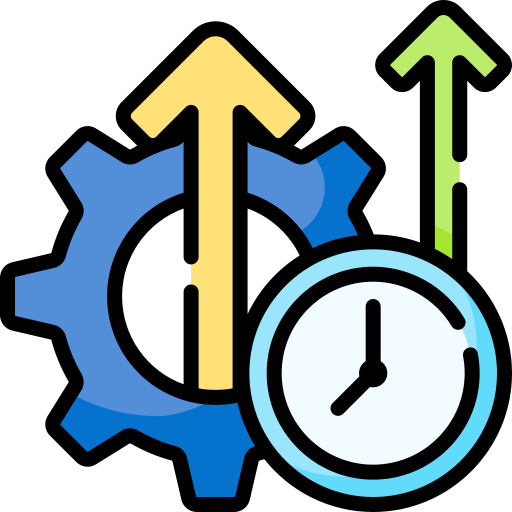

Herramientas para medir, analizar y optimizar el rendimiento organizacional
Explora los conceptos clave de los indicadores de gestión: desde la definición y características hasta los tipos, ejemplos prácticos y beneficios para la toma de decisiones.